_files/20201124032511.png "CSDN首页")
_files/20201120101655.png)
_files/original.png)
_files/articleReadEyes.png)
_files/tobarCollect.png)
_files/tobarCollectionActive.png)
一、什么是自定义Widget组件
- Qt的UI设计器提供了很多GUI设计的界面组件，可以满足常见的界面设计需求。但是某些时候需要设计特殊的界面组件，而在UI设计器的组件面板里没有合适的组件，这时就需要设计自定义的界面组件
二、如何设计自定义的Widget组件
- 所有组件的基类是QWidget，要设置自定义的界面组件，可以从QWidget继承一个自定义的类，重定义其paintEvent()事件，利用Qt的绘图功能绘制组件外观，并实现需要的其它功能
- 然后在窗体中放置一个Widget，右击Widget组件，“Protomed to”提升为我们上面定义的那个类（看后面的演示案例）
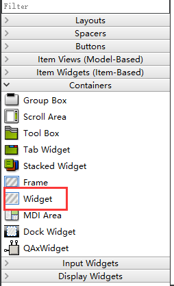
三、演示案例
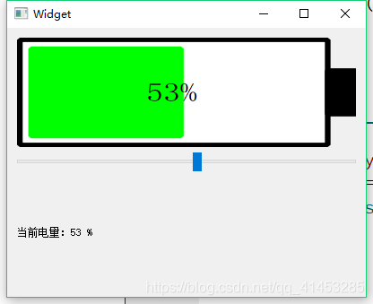
- 设计一个这样的电池组件
第一步：
- 先创建一个基于QWidget的应用窗体
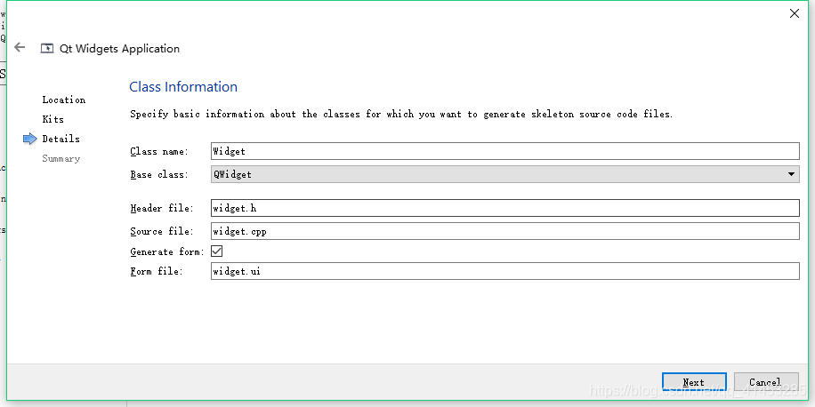
第二步：
- 然后再添加一个从QWidget继承的类QmyBattery
- 在此项目的基础上，点击Qt Creator的“File” ==>"New File or Project" ==>“C++ Class” ==>创建一个基于QWdiget的“qmybattery”类
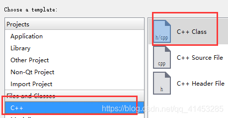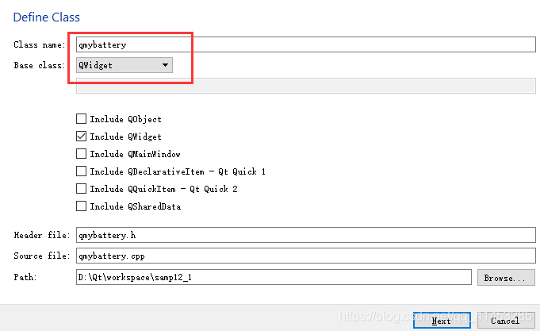
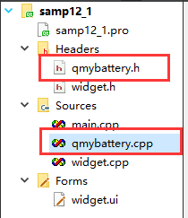
第三步：
- 向qmybattery.h文件中书写代码，内容如下
第四步：
- 定义paintEvent()函数
第五步：
- 定义其他成员函数
第六步：
使用“提升法”，将我们自定义的类对象提升为UI组件
- ①在UI界面中，移动一个Widget组件到主窗体中，然后右击组件，点击“Promote to”菜单项
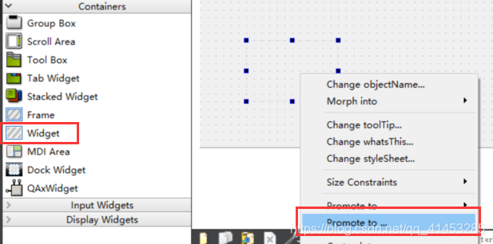
- ②点击之后，出现下面的UI画框
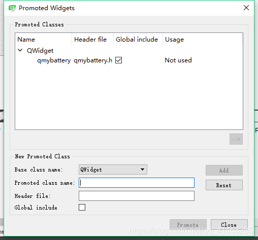
- ③我们将“Base class name”改为“QWidget”。将Promoted class name改为“qmybattery”。勾选一些选项，然后点击Promote（如果我们有其他的自定义类也可以添加到Promoted Classes中，以便我们选择使用）
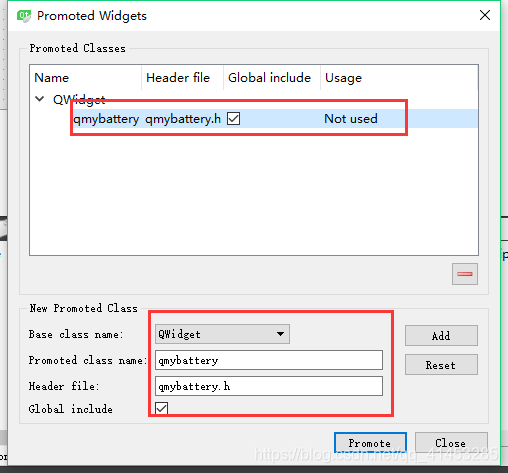
- ④可以看到这个组件的类名称变为了qmybattery
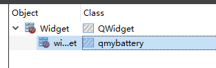
- ⑤右击这个组件，将其object name改为“battery”
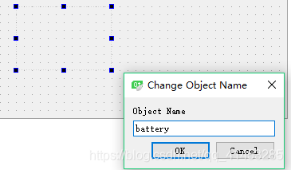
第七步：
- 在主窗体中再放置一个Horizontal Slider组件和一个QLabel组件，然后与battery这个组件进行排版
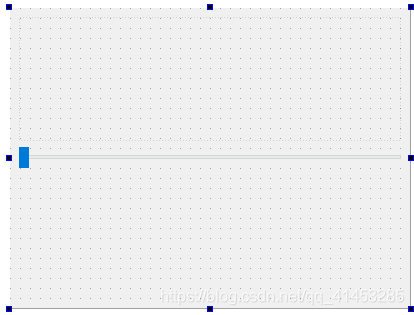
第八步：
- 我们书写Horizontal Slider组件的valueChanged信号，然后调用setPowerLevel函数，这样的话，我们的qmybattery类就会接收到powerLevelChanged信号了
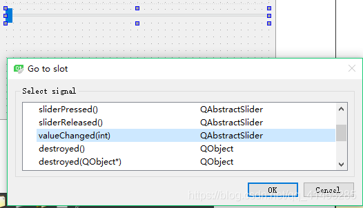
_files/tobarThumbUpactive.png)
_files/tobarThumbUp.png)
_files/tobarComment.png)
_files/tobarCommentactive.png)
_files/tobarShare.png)
_files/tobarShareactive.png)
![]()
_files/tobarReward.png)
_files/tobarRewardactive.png)
_files/tobarReport.png)
_files/tobarReportactive.png)
_files/closePrompt.png)
_files/readCountWhite.png) 7579
7579
_files/anonymous-User-img.png)
_files/tel.png)
_files/email.png)
_files/cs.png)
_files/guide.png)
_files/kefu.png)
_files/fanhuidingbucopy.png)